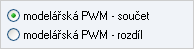
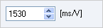
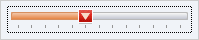
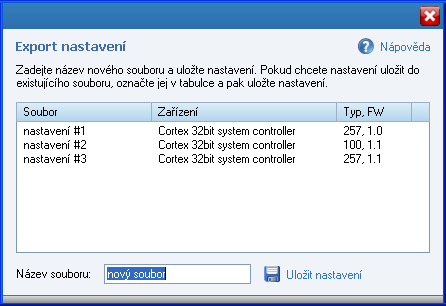
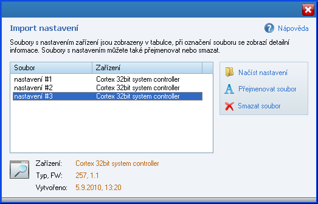
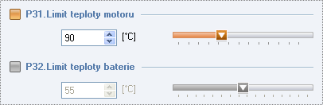
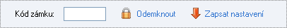
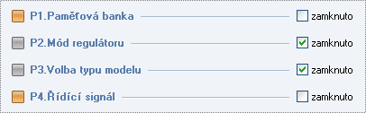

|
|
Okno Nastavení zařízení umožňuje zobrazovat a měnit všechny parametry nastavení zařízení - regulátoru či BMS. Nastavení se automaticky naète vždy po spuštìní aplikace, je-li zaøízení pøipojeno, anebo vždy po pøipojení zaøízení k USB modulu.
Seznam funkcí pro práci s nastavením:
Naète a zobrazí všechny parametry nastavení z regulátoru nebo BMS.
Zapíše nastavení do zaøízení (regulátoru èi BMS). Zapisují se vždy pouze ty parametry, u kterých byla provedena zmìna.
Zruší všechny provedené zmìny v nastavení. Vrátí nastavení zpìt do stavu, jaké bylo pøi naètení ze zaøízení.
Pøíkaz pro výchozí nastavení. Zaøízení (regulátor nebo BMS) bude navráceno do výchozího výrobního nastavení (všechny uživatelské zmìny provedené v nastavení budou zrušeny).
Uloží aktuální nastavení všech parametrù do souboru ve formátu XML.
Funkce import a export nastavení umožòují ukládat kompletní nastavení zaøízení do souborù. Obì funkce jsou podrobnì popsány v následujícím textu.
Uzamknutí vybraných parametrù nastavení. Funkce je podrobnì popsána v následujícím textu.
Typy parametrù U nastavení zaøízení (regulátoru, BMS) existují 2 typy parametrù, které se liší zpùsobem nastavení:
a) seznam
U tohoto typu parametru jsou všechny hodnoty uvedeny v seznamu, ze kterého se vybírá vždy pouze jedna možnost.

b) hodnota
Parametr s èíselnou hodnotou, která se zadává pomocí editaèního pole. Hodnotu lze nastavovat více zpùsoby: a) pøímé zadání hodnoty pomocí numerické klávesnice; b) zmìna hodnoty pomocí šipek editaèního pole; c) zmìna hodnoty pomocí kláves šipka nahoru, šipka dolù, PageUp a PageDown.

U nìkterých parametrù je navíc i možné nastavit jejich hodnotu jednoduše pomocí posuvníku. Hodnotu lze nastavovat dvìma zpùsoby: a) tažením jezdce posuvníku, pomocí levého tlaèítka myši; b) posouváním jezdce pomocí kláves šipka vlevo, šipka vpravo, PageUp, PageDown, Home a End.

1. Export nastavení Funkce Export nastavení umožňuje vytvářet různé profily nastavení pro zařízení (regulátory a BMS). Tyto profily pak můžete do zařízení kdykoliv načíst zpět pomocí funkce Import nastavení.
Napřed zadejte do textového pole název nového souboru. Pokud chcete uložit nastavení do již existujícího souboru, označte napřed konkrétní soubor v tabulce. U každého souboru je pro snadnou orientaci zobrazen název zařízení, typ a verze firmware.
Export nastavení spustíte pomocí tlačítka Uložit nastavení. Ze zařízení (regulátoru či BMS) se začnou načítat datové bloky nastavení, tato operace může trvat delší dobu. Po úspěšném načtení nastavení se data uloží do zvoleného souboru, a export nastavení je tak dokončen. Takto uložené nastavení můžete kdykoliv později načíst do zařízení zpět, pomocí funkce Import nastavení.

Pozn: soubory s nastavením se ukládají do složky Dokumenty\MGM ProTool\options.
2. Import nastavení Pomocí funkce Import nastavení můžete do regulátoru nebo BMS načíst kompletní nastavení ze souboru, který jste dříve vytvořili pomocí funkce Export nastavení. Seznam souborů s nastavením je zobrazen v tabulce.
Napřed označte konkrétní soubor s nastavením v tabulce. Pod tabulkou se pak zobrazí detailní informace, pro jaký typ zařízení je nastavení určeno. Pozor: aby bylo možné nastavení importovat, musí souhlasit typ i verze firmware. Tozn. typ a verze firmware zařízení, do kterého se chystáte nastavení importovat, musí být stejné jako typ a verze firmware uvedené u označeného souboru s nastavením.
Import nastavení spustíte pomocí tlačítka Načíst nastavení. Ze zvoleného souboru se nejprve načtou datové bloky s nastavením, které se následně začnou zapisovat do zařízení (regulátoru nebo BMS). Tato operace může trvat delší dobu. Po úspěšném zápisu nastavení do zařízení se okno Import nastavení zavře, a následně se automaticky načte nastavení ze zařízení. V aplikaci tak uvidíte aktuální nastavení zařízení, které jste právě naimportovali ze souboru.
Pozor: pokud by během zápisu nastavení do zařízení došlo k chybě, je nutné akci zopakovat. Hrozí totiž, že se do zařízení zapíše jen část nastavení, což by mohlo vést k nesprávné funkci zařízení.

Načíst nastavení - načte nastavení z označeného souboru, a zapíše jej do zařízení - do regulátoru či BMS. Přejmenovat soubor - přejmenuje označený soubor. Smazat soubor - smaže označený soubor.
3. Nastavení zámků Funkce Nastavení zámků slouží k uzamknutí libovolných parametrů nastavení. U takto zamknutých parametrů pak nelze zmìnit nastavení (v seznamu parametrů, záložka Nastavení). Příklad uzamknutého parametru je znázorněn na obrázku, uzamknutý parametr je "P32 Limit teploty baterie", ovládací prvky (editační políčko a posuvník) jsou neaktivní a nastavení tohoto parametru tak nelze změnit.

Po otevření okna Nastavení zámků dojde k načtení aktuálního stavu zámků v zařízení, a tento stav se zobrazí ve vrchní části okna. Zařízení se může nacházet ve dvou stavech:
a) zařízení je odemknuto - zámky nejsou nastaveny, můžete nastavit uzamknutí parametrů a následně nastavení zapsat. b) zařízení je zamknuto - zámky jsou nastaveny. Pokud chcete nastavení zámků změnit, zařízení je nutné napřed odemknout.
Odemknutí zařízení Pro odemknutí zařízení je nejprve nutné zadat Kód zámku. Jedná se o čtyřmístné číslo, toto číslo musí shodné s číslem které se zadávalo při posledním zápisu nastavení (uzamknutí). Kliknutím na tlačítko Odemknout dojde ke kontrole zadaného kódu, a pokud kód souhlasí pak dojde k odemknutí zařízení. Po úspěšném odemknutí můžete změnit nastavení zámků a zapsat do zařízení.

Nastavení zámků a uložení (uzamknutí) Nejprve nastavte které parametry chcete uzamknout, k tomu slouží zatrhávací políčko zamknuto napravo od názvu parametru. Následně zadejte kód zámku (čtyřmístné číslo), tento kód je nutné si zapamatovat pro pozdější odemknutí. Nakonec nastavení uložíte do zařízení pomocí tlačítka Zapsat nastavení.

|